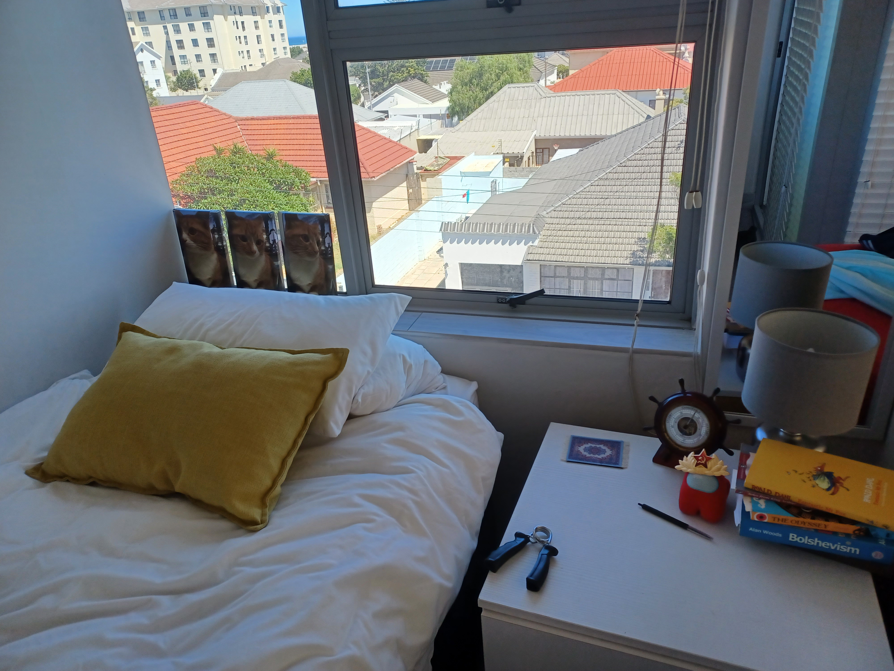
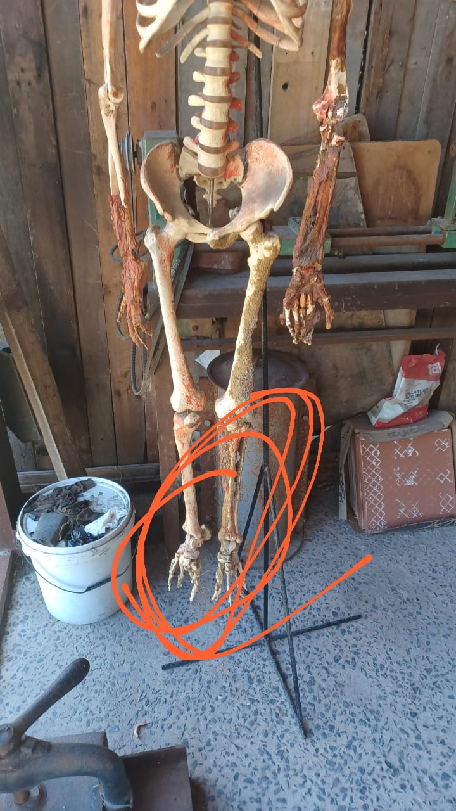

updates
28 Febury 2024
its been a while since i updated the website. so let me fill everybody in on what has happend so far. allow me to do a recap
- First of all i arrived in cape town on saturday (the 24th) again after speding a long period of time in kenton house sitting and learning ceramics(i will write more about caramics at a later date).
- next once i arrived in cape town i got my things unpacked and took the rest of the evening to relax and prepair for the week ahead. i will add a picture of the view from my window.

- on sunday we went out to a market which was a but anti climactic. the food was good but there werent that many stalls. i did take a photo of a skeliton whit some terrable looking feet though.

- the monday is where things realy started to get interesting. so this will be a long one. i am far from campus and i dont have a car i decided to take the train. so i went with my brother be and it went well. we arrived at the station in strand and it looked a bit dodgy but luckily we live in a country with such friendly people. in the first carrage we met a man who regularly used the trains to get to cape town so he explained to us how they work. during the explanation we collected a french-canadian tourist who was also on the train. so we discussed the circumstances of the train until our first transfer at the belville station. once there we followed the regular and the next train was more modern than our initial train. it was a modern train much like the ones you get in first world countries. on that train the carrages are a lot more open and they are all connected so its like one long carrage. we sat and kept speaking to the regular. who turns out works for home afairs in the imigration department. this led to a very lively discussion, esspecialy when one of his colligues got on the train with us. we ended up having a conversation which involved everybody who was on the carrige with us. it was very interesting to hear all these opinions from people i had just met. luckily for us the trains arent as fast as the ones in the first world so we got to speek for about an hour before arriving at cape town station. despite everybodies dissagrements we all still shook hands at the end and we even got directions on how to get to our next train. which was only leaving in 45 mins. we managed to unintensionaly kill the time by looking for a bathroom because all of them were locked for no particular reason. we had to leave the station to find a bathroom but while speeking to somebody at adesk a very helpfull(desporate for money) man guided us to a working bathroom. unfortionately, because we left the station we had to buy new tickets and the guy we met played his cards purfectaly for me to feel just bad enough to buy him a ticket to wherever he was going (the ticket was R16). then we borded the final train to campus wich was a much less eventfull trip. what i did notice though was that it seemed like the average income of people taking the south line was much higher but still very much working class.
- once we got of the train it was a quick walk from the station to campus where we met up with my mom and dad. I still had about an hour to kill till orientation so we had lunch. while having lunch i walked around a bit and watched all the people in the area just to see the geniral vibe of the university. the more i looked around. the more my excitement grew. all the people i saw looked like the exact kind of persons i hoped to see. although it didnt stop my nerves. i didnt want to screw this opportunity up! after the nerve racking lunch i finaly sent my family off and went to campus to finaly start my orientation. my campus is above the ground floor of a office building and i bearly heard the guy at the front desk so i nearly got off the lift at the wrong floor. luckily i got it right the first time and i approched the lady at the front desk to collect my access card for campus. while i waited for this a girl was saying fairwell to her father. i collected my card and went to go sit in the waiting area where i was to affraid to speek to anybody (but i was ready for anybody to talk to me). then the girl who i saw saying goodbye to her father came and sat next to me. we spoke for a bit but i think the converation eased both of our nerves. learning that somebody else was also feeling anxious aswell. she is also very fond of cats so we bonded over that and decided to be each others buddies for orientation. after about 20 mins we were called for the begining of our orientation. there were only about 30 people in our group(i think that might of been all of the first years but i'm an not very sure). i wont put in all the boring detail. but the key take away was that the more i heard about how things worked and what we would be doing the more excited i got. i have very high hopes for this course. by the end of the campus tour we had a short break and our buddy group had grown by 3 more people. by the end of the day we had already made some plans for us to spend time together outside of classes. i left campus that day even more feeling optimistic than when i had arrived. once i got home that night i was exausted and i think i went to bed at about 8:30 pm. it was a very eventfull day.
- the next day i spent sorting out all the admin and finnishing the online orientation. they said we were supposed to spend all week on it but i finnished it in an few hours. i was also messaging the people i met the previos day to find out mor about the trains and other ways which i might get to campus if the trains faild me. so all day was more or less filled with admin. but i eventualy found a up to date train schedule after hours of searching for them
- finnaly, today i woke up and decided to take the train to campus not because i had to but because i wanted to arrange a few conversations with people on campus and get myself a little bit more comefortable with the trains now that i had the schedules. i woke up at 6:45 am and i had to get on the 7:45 am train. i russhed my tea, breakfast and shower and arrived at the station just in time to find out that the 6am train hadn't even left yet. there was a fault further up the line and nobody knew when it was going to start running again. so after waiting at the station for about an hour i decided to walk back home and rechedule my appointments for another day. once i got home i decided that this was the perfect chance to update the website and thats where i am right now. i would like to post pictures of my time on the trains and at campus but i didnt take any :(
>
23 Febury 2024
i started making this website and decided to make the links change how your mouse looks to tease all the ones who couldnt figure it out.